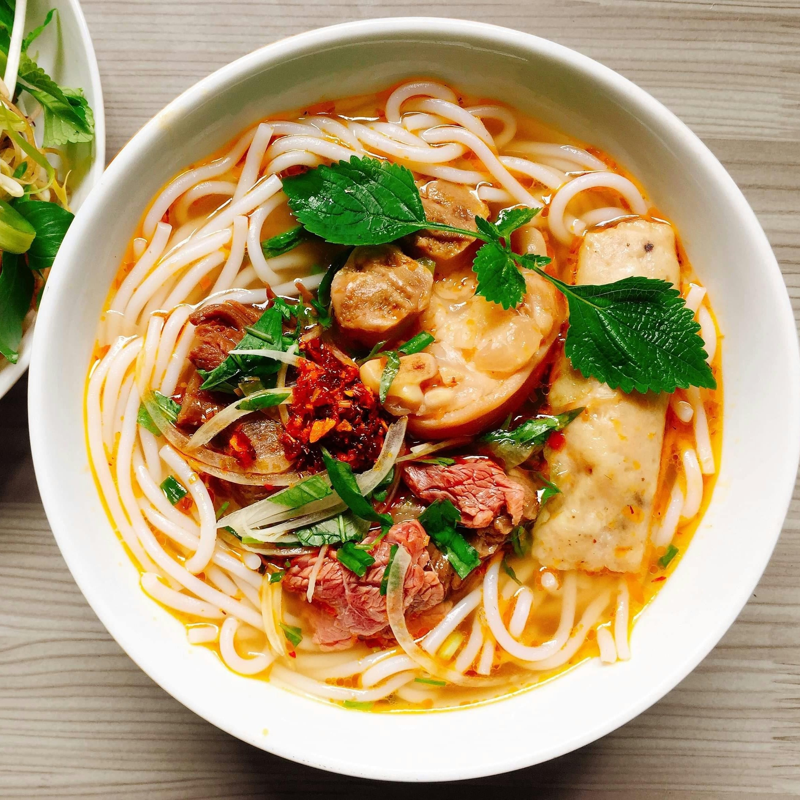

A warm, flavorful, and comforting noodle soup made with broth, noodles, vegetables, and a soft-boiled egg. Ramen noodles are a popular Japanese-inspired dish, known for their rich broth, chewy noodles and tasty toppings. This homemade version is quick to prepare, customizable and perfect for a filing meal.
Your comforting ramen is ready --- Enjoy!!